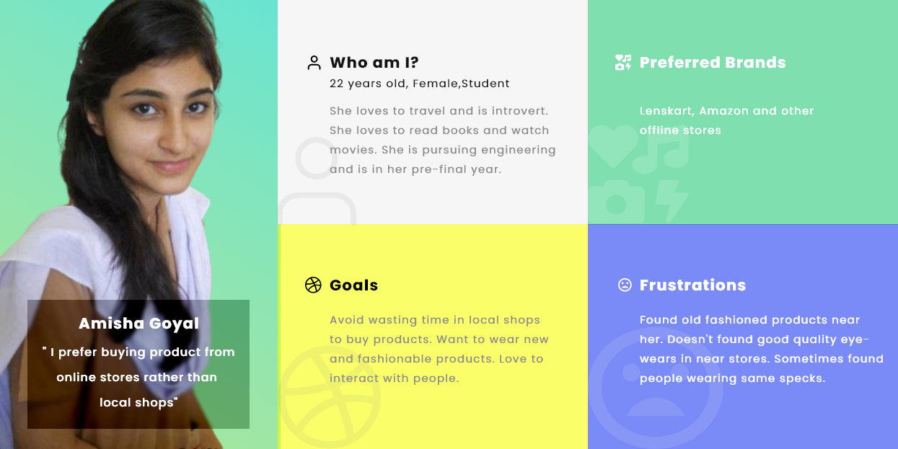

A case study in which I’m designing an experience for users
to
use customized frames and other eyewear products
as per their needs and requirements which mostly works for
people who are fanatics and fashion fads.
Project Context ‚úçüèª
4 Week
Case Study
Solo Project
My Role Ô∏èü§µ
UX Research : Surveys, Interviews, Market
Research
UX Design
Visual Design
Tools Used üõ†üîé
Adobe XD
Miro
Google Forms
Process
As initially for every project I ask few research questions
from myself to better understand the context. Here are some
questions I wanted to get answers by the end of this project
-
Current apps or services used by users.
Users experience while using the existing products in
the market.
Challenges faced by users while using those
applications.
What are some issues users might face while buying any
product ?
What values I can provide to the users ?
Based on these questions, I conducted a survey and 1-1
interviews to understand the problems and pain points.
But before that first I categorise my users, their
geographical area and all.
Target Users - People from diverse
backgrounds either could be
teenager, middle aged people
and even kids too but
their source of purcahsing would be their parents
only.
Surveys - In this my main focus
was to gather as much as data possible and
understand the basic needs of my user group. So I
generated a google form and float it in my class
groups to obtain the data and within few hours got
data from around 35 folks.
(Quantitative)
Semi-Structured Interviews - Now
here I talk 1-1 with my friends who recently buyed
some eyewear products and got to know their views.
(Qualitative)
Competitor Reviews -
Best way to understand pain points of the users is
to learn from what competitors won’t able to provide
and then after analysing solve that issue for your
user.
Also, the global eyewear market, which is made up of
spectacles, contact lenses, sunglasses, and other
eyewear products, was estimated to be worth around
$150.35 billion in 2020 and
was forecast to reach a value of
210.8 billion U.S. dollars by
2025. (Source : Google)
Now particularly I had the data, but that data is not
properly aligned to make something out of it. So, to make
information out of that data, I started analysing trends and
patterns. Here are some personas that I made -

Personas help me in better understanding about the group of
users and I made my product according to that.
Empathising with users is crucial,
without knowing them by heart buiding product is difficult
:)
Now after getting clear idea of what my users want, I listed
some major issues that I found
important to solve -
Hard to look for a particular product
that they saw over social media.
Lots of options available but
difficult to select online
Hard to find
customised frames on
local/online stores.
After buying the product user uninstalled the
application (Chance to improve it’s UX by adding
gamification).
User is worried about the
inferior quality.
Now comes the challenging and one of the interesting part of
the whole design process, here comes the part when I really
started making any prodcut for the end user. I always make
use of Pen & Paper for all kind of
brainstorming, because it gives me ample space & time to
iterate more and more.
Here is a simple architecture that I made, so that I had a
better project scope -
After making this, now turn comes to making
low-fidelity wireframes, these are
important because, these helps me in visualising things
without moving to the final visual design and I can iterate
as much as I can -
Now I have the whole idea what colors, fonts I need to use,
I had proper understanding of the product, now time comes to
make the final visual design -
In the first frame as you can see the home
screen of the application, here my main motive
is to
categorise and sort
things beautifully as main concern of users is
there are a lot of choices available, but
difficult to select
(Problem Solved) .
By Clicking on “Eye-Glasses” as you can see a
modal comes out, asking the user for customised
or company’s choice product.
If user goes with compnay choices, user can see
the different products available, here again I
try to make sorting easy, as from research I got
to know that users make
sorting more on the basis of type of
frames, so I try to give more priority to it.
Also, I had given each product a
unique ID, reason
being is when a user see someactor wearing any
product over posters, ads, and they want to buy
the same product but there’s no way they can
find that over the application, even it becomes
easier for user to share the product now.
(Problem Solved)
Now on specific product screen, initially all
details are shown to the user, but there’s an
option of hide data through accordion to
reduce the load and further
information.
On the home page, there’s an option of
“Recycle”, now
sometimes what happened is after buying the
product user uninstall the application, so
there’s a chance to improve the product via sort
of gamification, I
introduced a feature where user can recycle
thier last buyed frames and in return they would
get some points which could be redeemed on next
transactions.
(Problem Solved)
On Recycle screen user can simply upload the
product image and id, if it got accepted then
service agent would take that and user would get
the points.
Now, on home screen itself, for buying
Eyeglasses there could be two options, one of
them is “Customisable products”, reason for
building this feature is as most of users want
products that are completely new and match with
their trends. So, as in the last frame of video,
user can customize products according to his/her
needs. But there’s a constraint, as I’m not sure
how much practical is this.
(Problem Solved)
Here once user decides to buy a particular
product user would redirect to sign in screen,
initially there would be no Sign-In
option, as from my research what I found is
users drops when we initally asked for their
information, also in sign in screen there could
be an option where user can buy products
as a guest, to avoid
any drop-out of users .
After Signing-In users can make the payment, I
make use of breadcrumbs in a way that users can
see each and every step clearly and tries to
display every information.
Each process is divided into small-small steps
so that user won’t find too much load at once.
Now time is for learnigns and see where things could be
improved -
The very first thing is I designed things without data,
designing such a vast application sometimes need a lot
of data about users, scalability and there could be few
other things too. So, definitely there are few things
which I miss out, but I designed things what I got from
my research and data.
Also, being consistent with design is so important, that
I figured out this thing while doing this case study, as
sometimes somewhere I used filled icons,somewhere lined
icons, but while iterating I feel it’s consistency that
brings beauty to the design.
Next step could be doing testing with users via
prototype and understanding whether they found it’s
usable or not.